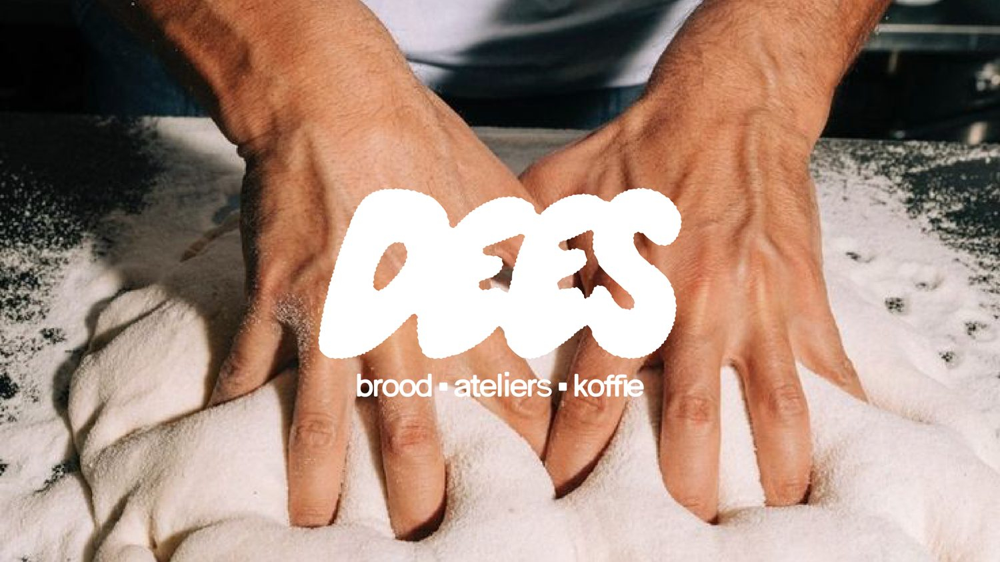
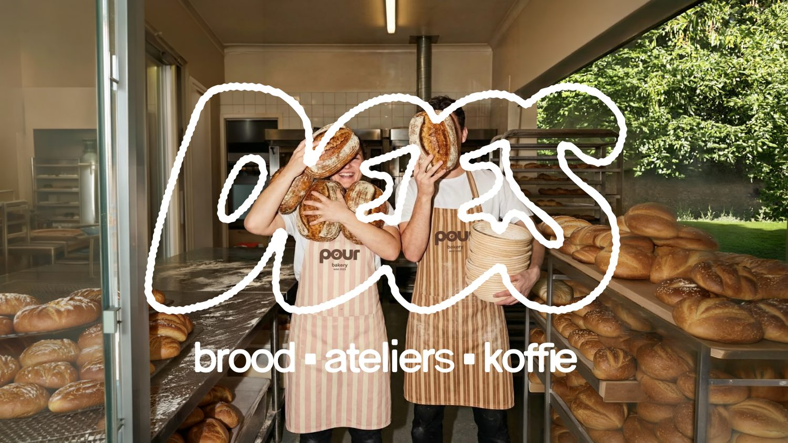
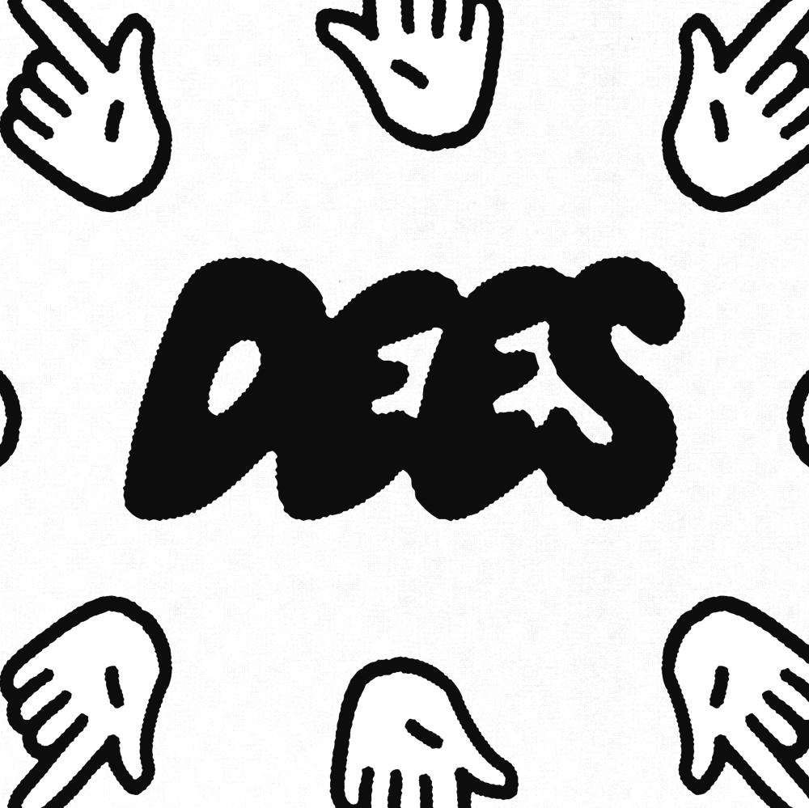

Vers uit eigen oven
Elke dag desembrood, croissants, foccacia en broodjes van de maand. Mixen, kneden, bakken, eten.

brood • ateliers • koffie — Tilburg
Welkom bij Dees. Een plek voor vers brood, ontbijt, lunch, koffie en creatieve ontmoetingen in Tilburg.
Korte Tuinstraat 20-22 Dwaalgebied Tilburg
Welkom bij Dees
Dees is een toegankelijke plek waar horeca, retail en ateliers samenkomen. Een derde plek — niet thuis, niet werk, maar ergens daartussenin waar je altijd welkom bent.
Of je nu binnenloopt voor een goede koffie, vers brood, een lange lunch of gewoon even wilt zijn: bij Dees staat de deur open. Ambachtelijk, handgemaakt en met ruimte voor spontaniteit.

Drie dingen, één plek
Elke dag desembrood, croissants, foccacia en broodjes van de maand. Mixen, kneden, bakken, eten.
Creatieve ateliers, workshops en werkplekken. Een plek waar creativiteit mag ontstaan — nooit geforceerd.
Specialty koffie, thee en een lange tafel. Werken, kletsen of gewoon even zijn. Jij bepaalt.

Elke dag
vers brood
Waar Dees voor staat
Een open, uitnodigende plek. Iedereen is welkom om binnen te lopen, te blijven hangen of mee te doen.
Levendige creativiteit met ruimte voor variatie. Creativiteit die je niet altijd ziet, maar wél voelt.
Met aandacht gemaakt. Imperfecties mogen er zijn — dat maakt het echt, warm en van Dees.
Kom je langs?
Je vindt ons in het Dwaalgebied, Korte Tuinstraat 20-22 in Tilburg. Loop binnen voor koffie, brood of een babbel.
